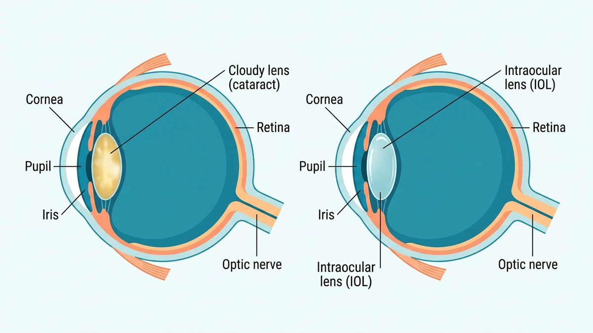
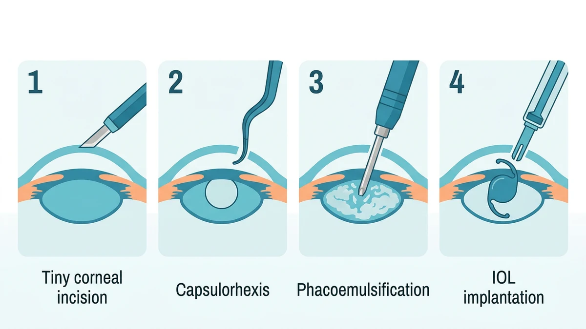

آب مروارید یعنی کدر شدن عدسی طبیعی چشم که به تدریج دید را مهآلود میکند؛ درمان قطعی آن جراحی است که با بیحسی موضعی، عدسی کدر با امواج اولتراسوند خرد و خارج میشود و یک عدسی مصنوعی شفاف جای آن مینشیند. این عمل معمولاً سرپایی است و یکی از موفقترین جراحیهای دنیا به شمار میرود.
بسیاری از بیماران وقتی برای نخستین بار نام اتاق عمل چشم را میشنوند، تصور میکنند چشم باز یا برداشته میشود؛ در حالی که همه کار از شکاف بسیار کوچکی روی قرنیه انجام میشود و خود چشم در جای خودش باقی میماند. در این راهنما مسیر واقعی جراحی آب مروارید را شفاف باز میکنیم؛ جزئیات اجرایی همیشه بر اساس اندازهگیریهای چشم شما و پروتکل مرکز درمانی تنظیم میشود.
پشت عنبیه، عدسی شفافی قرار دارد که نور را روی شبکیه متمرکز میکند. با افزایش سن یا گاهی به دنبال بیماریهایی مانند دیابت، ضربهٔ چشمی یا مصرف طولانیمدت بعضی داروها، پروتئینهای عدسی به هم میچسبند و عدسی کمکم حالت مهآلود پیدا میکند. در این وضعیت نور بهدرستی از عدسی عبور نمیکند و دید تار، کمرنگ و حساس به نور میشود.
بیمار معمولاً ابتدا در دیدن تابلوهای دور یا رانندگی شبانه مشکل پیدا میکند؛ نور چراغها هاله دارد و مطالعه زیر نور معمولی سخت میشود. نکتهٔ مهم این است که آب مروارید یک روند پیشرونده است و با قطره یا عینک متوقف نمیشود؛ عینک فقط در مراحل اولیه کمککننده است و درمان نهایی، جایگزینی عدسی کدر است.

آب مروارید به تنهایی دلیلی برای عجله در جراحی نیست و تصمیم بر اساس تأثیر آن بر زندگی روزمره گرفته میشود. چشمپزشک وقتی جراحی را پیشنهاد میکند که یک یا چند مورد زیر وجود داشته باشد:
بیشتر داوطلبان این جراحی سالمنداناند؛ به همین دلیل ارزیابی وضعیت عمومی پیش از عمل اهمیت دارد و در مقالهٔ جراحی در سنین بالا به آن پرداخته شده است.
برخلاف تصور رایج، بیشتر جراحیهای آب مروارید بدون بیهوشی عمومی و با بیحسی موضعی انجام میشوند. چشم با قطرهٔ بیحسی یا تزریق بسیار ظریفی اطراف چشم بیحس میشود و بیمار در تمام مدت بیدار است، اما دردی حس نمیکند. آرامبخش سبک داخل وریدی هم در صورت نیاز برای کاهش اضطراب داده میشود.
بیهوشی عمومی فقط در شرایط خاص، مثل ناتوانی کودک یا بیمار خاص در همکاری یا موارد پزشکی پیچیده، انتخاب میشود. مقایسهٔ کامل این دو رویکرد در مقالهٔ بیهوشی عمومی و بیحسی ناحیهای آمده است.
| ویژگی | بیحسی موضعی (روش رایج) | بیهوشی عمومی |
|---|---|---|
| وضعیت بیمار | بیدار و آرام، بدون حس درد در چشم | خواب کامل دارویی تا پایان عمل |
| روش بیحسی | قطره یا تزریق ظریف اطراف چشم | داروی وریدی و راه هوایی تحت کنترل متخصص |
| کاربرد رایج | بیشتر بزرگسالان و سالمندان | کودکان، شرایط خاص یا عدم امکان همکاری |
روش استاندارد امروز، فیکوامولسیفیکیشن نام دارد که در شش گام پیاپی و از شکاف بسیار کوچک لبهٔ قرنیه انجام میشود:

عدسی داخلچشمی لنز کوچک، انعطافپذیر و ماندگاری است که جای عدسی طبیعی را میگیرد و معمولاً تا پایان عمر در چشم باقی میماند. پیش از عمل، دستگاههای اندازهگیری دقیق انحنای قرنیه و طول چشم را محاسبه میکنند تا شمارهٔ عدسی هر بیمار اختصاصی تعیین شود.
عدسیها انواع گوناگونی دارند: تککانونی که دید دور را شفاف میکند و معمولاً برای خواندن به عینک نیاز میشود، و انواع چندکانونی یا توریک که دید نزدیک یا آستیگماتیسم را هم پوشش میدهند. انتخاب نهایی با مشورت جراح و بر اساس سبک زندگی، بودجه و وضعیت چشم انجام میشود؛ هیچ نوعی برای همه بهترین نیست.
بیشتر موارد آب مروارید جراحی سرپایی است، یعنی بدون شبماندن در بیمارستان. پس از عمل، بیمار مدتی در اتاق ریکاوری میماند تا فشار چشم و علائم حیاتی پایش شود؛ چشم با پانسمان یا محافظ شفاف پوشیده شده و دید تار اولیه طبیعی است. هنگام ترخیص، برنامهٔ قطرهها و زمان ویزیت بعدی به همراه داده میشود و همراهی برای بازگشت به خانه ضروری است.
آمادگیهای روز عمل، از ناشتایی تا مدیریت داروها و قطرههای چشمی، در مقالهٔ آمادگی قبل از جراحی آب مروارید و مراقبتهای پس از ترخیص در مراقبتهای بعد از جراحی آب مروارید به تفصیل آمده است.
جراحی آب مروارید سابقهٔ موفقیت بالایی دارد و عوارض جدی نادر است، اما مانند هر عمل دیگری التهاب، عفونت، افزایش موقت فشار چشم، تورم شبکیه یا کدورت پوستهٔ پشتی عدسی ممکن است رخ دهد. معاینههای پیگیری منظم و استفاده درست از قطرهها بسیاری از این موارد را در همان ابتدا کنترل میکند.
⚠️ پس از ترخیص، در صورت کاهش ناگهانی دید، افزایش درد چشم با وجود قطرهها، قرمزی شدید، دیدن جرقههای نورانی یا پردهٔ سیاه متحرک در میدان دید، ترشح چرکی یا حالت تهوع و استفراغ همراه منتظر نمانید و فوراً با چشمپزشک معالج تماس بگیرید یا با ۱۱۵ اورژانس را خبر کنید. نشانههای هشداردهندهٔ دیگر را میتوانید در راهنمای علائم خطر بعد از عمل مرور کنید.
خیر. عمل معمولاً با قطره بیحسی یا تزریق موضعی ظریف اطراف چشم انجام میشود و بیمار دردی حس نمیکند؛ ممکن است حس لمس، فشار سبک یا نور میکروسکوپ را متوجه شود که طبیعی است.
روش رایج و استاندارد، فیکوامولسیفیکیشن است که در آن عدسی کدر با ارتعاش اولتراسوند خرد و مکیده میشود و عدسی مصنوعی جای آن مینشیند. لیزر در بعضی مراکز برای مراحل تکمیلی به کار میرود اما جایگزین کامل فیکو نیست.
عدسی داخلچشمی لنز کوچک و شفافی است که پس از برداشتن عدسی کدر، درون چشم گذاشته میشود تا نقش عدسی طبیعی را ایفا کند. نوع آن بر اساس اندازهگیریهای دقیق چشم، سبک زندگی و نیاز دید دور یا نزدیک توسط جراح انتخاب میشود.
خود جراحی معمولاً کوتاه است و بیشتر موارد به صورت سرپایی انجام میشود؛ بیمار پس از دوره کوتاه پایش در ریکاوری و با چشم بسته یا محافظ، همان روز به خانه میرود. آمادهسازی و پایش پیش و پس از عمل نسبت به خود جراحی زمان بیشتری میگیرد.
بهبود دید از همان روزهای نخست آغاز میشود، اما تاری و نوسان دید بهتدریج و در طول چند روز تا چند هفته برطرف میگردد تا چشم به عدسی جدید عادت کند. روند دقیق به شرایط هر چشم و بیماریهای همراه بستگی دارد.
این جراحی از موفقترین و ایمنترین اعمال چشمپزشکی است، اما مانند هر عمل دیگری عفونت، التهاب، افزایش فشار چشم یا تورم شبکیه بهندرت ممکن است رخ دهد. معاینههای پیگیری و استفاده درست از قطرهها این خطرها را تا حد امکان کم میکند.
دستور پزشک و پروتکل مرکز درمانی شما بر هر متن عمومی مقدم است.
این مقاله صرفاً جنبهی آموزش و اطلاعرسانی دارد و جایگزین تشخیص، مشاوره یا درمان پزشکی نیست.